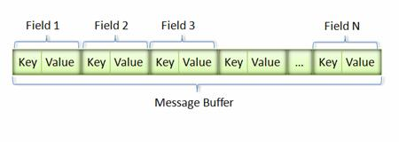

JSON
JSON(JavaScript Object Notation, JS 对象简谱) 是一种轻量级的数据交换格式
PROFOBUF
Protocol Buffers是一种序列化数据结构的协议。对于透过管线(pipeline)或存储数据进行通信的程序开发上是很有用的。这个方法包含一个接口描述语言，描述一些数据结构，并提供程序工具根据这些描述产生代码，用于将这些数据结构产生或解析数据流。
知识
>
JSON&PB 编码长度对比
JSON
{"red_point":18}
PB
08 24
- 16 vs 2
JSON&PB 编码长度对比
JSON
{"red_point":18,"award":[1,2,3],"num":132.215}
PB
28 02 28 04 28 06 25 0A 37 04 43 08 24
- 46 vs 13
JSON&PB 解析速度对比
proto文件示例
{
"reward_item_ids":[1,2,3],
"reward_item_nums":[100,200,300]
}
syntax = "proto2";
message s2c_14030 {
repeated sint32 reward_item_ids = 1;
repeated sint32 reward_item_nums = 2;
}
proto文件示例
syntax = "proto2";
message SkillData {
required sint32 id = 1;
required sint32 lv = 2;
required sint32 t = 3;
}
message MapSkills {
map<string, Skill> list = 1;
}
message Skill {
required sint32 id = 1;
required sint32 status = 2;
}
message s2c_13015 {
repeated SkillData battery_skills = 1;
map<string, MapSkills> passive_skills = 2;
map<string, MapSkills> talent_skills = 3;
}
编码原理
varint

key-value
Type Meaning Used For
0 Varint int32, int64, uint32, uint64, sint32, sint64, bool, enum
1 64-bit fixed64, sfixed64, double
2 Length-delimi string, bytes, embedded messages, packed repeated fields
3 Start group Groups (deprecated)
4 End group Groups (deprecated)
5 32-bit fixed32, sfixed32, float
- key
Key 的定义 (field_number << 3) | wire_type
Zigzag 编码

官方编译器的问题
- 不支持AS3，LUA
- JS有反射代码，小游戏不支持
- 自动修改变量风格， eg:user_name -> userName
- 代码有冗余
解决方案
lua
as3
tool/tool/proto ，基于protobuf2，PY版本的 parser
支持玩一玩、浏览器、小游戏等环境
protobuf2特性，目前支持不完全
工具使用
- 安装官方protoc
- proto.py脚本
项目使用收益
- 预计减少流量（60%以上），增加单机用户负载量
- 减小配表体积 （60%以上）
- 增加封接包速度 （？）
- 增加协议代码的可读性，增加IDE代码提示
剩余的工作
- 完善protobuf2特性（关键字、上行流量）
- 改造协议
- 优化as protobuf库（reader、decoder对象池）
- 测试
在后端通信中的应用
- lua <-> php
- 前端 <-> php